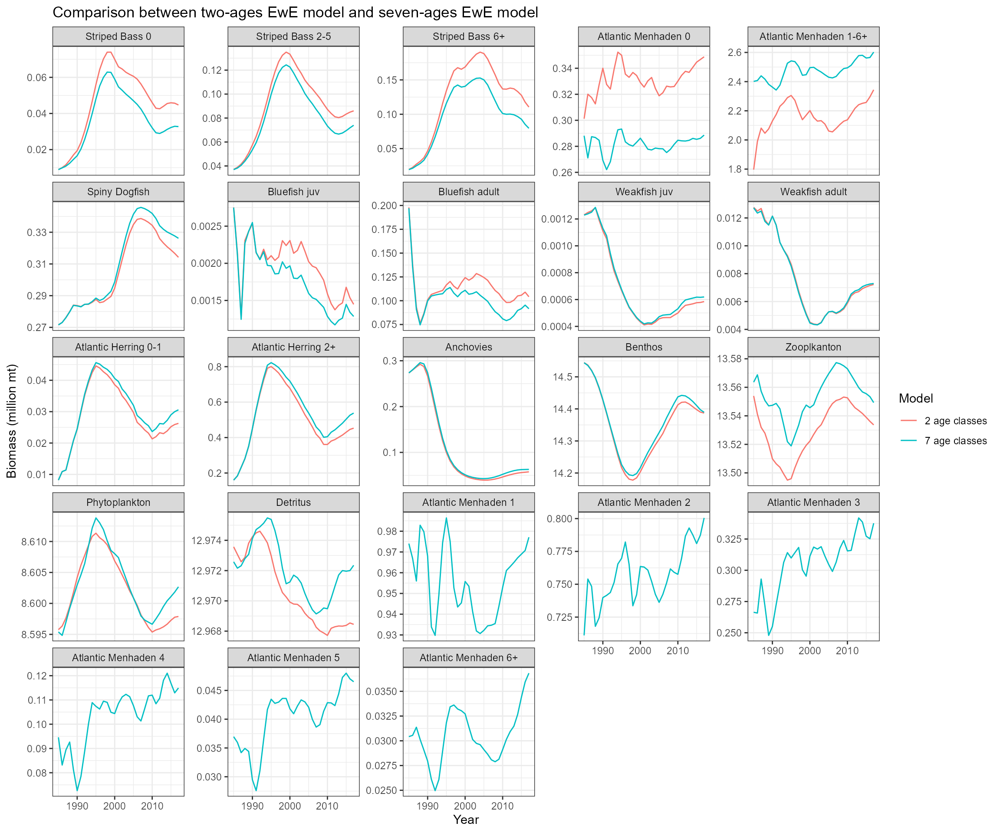
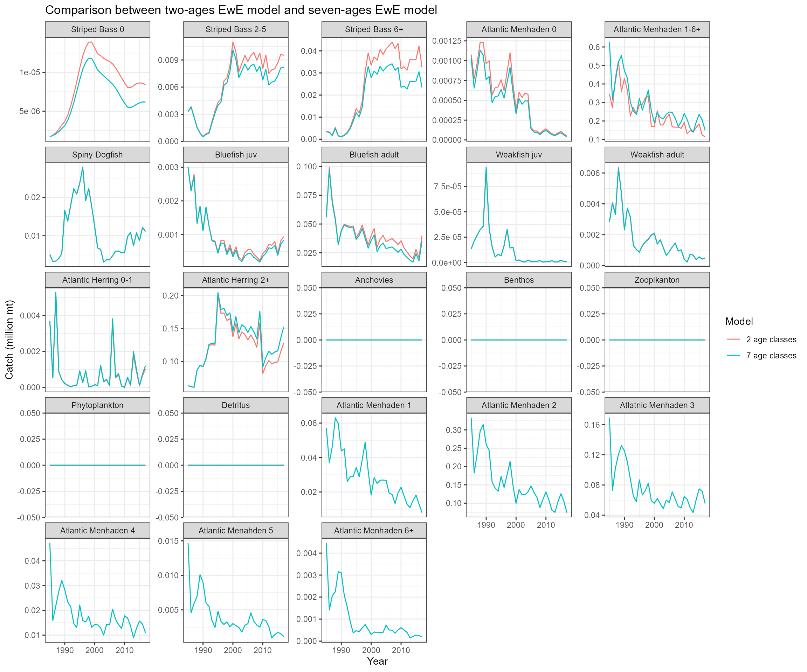
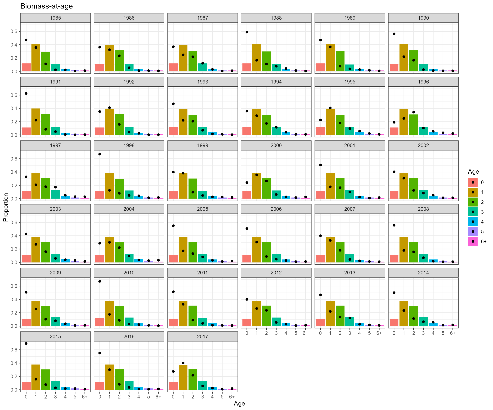

03_Ecosystem_model_restructuring.RmdThe goal of the this work is to restructure an EwE model that include a menhaden-like species with 7 age classes (i.e. 0 - 6+). An existing EwE model of the Northwest Atlantic Continental Shelf model of intermediate complexity for ecosystems (NWACS-MICE) was previously developed to link the dynamics of menhaden with key managed predators (Chagaris et al., 2020). There were two age classes of menhaden in the NWACS-MICE model. To restructure the MWACS-MICE model, we made following changes:
Updated Ecopath multi-stanza groups (menhaden-like species)
Updated age 6+ biomass in 1985 using Beaufort Assessment Model (BAM) outputs (SEDAR 2020).
Updated total mortality-at-age in 1985 inputs using \(C_{a}/B_{a}+M_{a}\) with BAM outputs. Here \(C\), \(B\), and \(M\) represent catch, biomass, and natural mortality respectively. \(a\) denotes age.
Updated relative biomass accumulation rate (BA/B). Three scenarios were explored: 1) 0.114 from Chagaris et al. (2020), 2) EwE default value of 0, 3) -0.081 based on \((B_{1986} - B_{1985})/B_{1986}\) (Buchheister et al., 2017). Both BA/B = 0 and BA/B = -0.081 help improve agreement between Ecosim predicted catch with observed catch and BA/B = 0 showed lower sum of squares (SS) value. SS values from scenarios 1 - 3 were 3059, 2339, and 3136 respectively. So we used BA/B = 0 for base run. Key figures from the three scenarios could be found here.
Updated Ecopath diet composition using inputs from NWACS-MICE model (Chagaris et al., 2020), full NWACS model (Buchhester et al., 2017), and BAM M-at-age data.
Updated Ecopath C-at-age using BAM outputs.
Updated Ecosim vulnerabilities and ages 1-6+ share the same vulnerability values.
Updated time series matrix using I-at-age, C-at-age, and F-at-age from BAM outputs. Here \(I\) and \(F\) represent abundance indices and fishing mortality respectively.
A few forcing scenarios were tested to explore various sources of environmental variability. For example, primary production splines was applied to phytoplankton, recruitment deviations from Chagaris et al. (2020) and BAM outputs were linked with menhaden age 0 fish. However, incorporating primary production splines did help soak up some of the process variability in the food web dynamics and did not help improve model fits. Incorporation of recruitment deviations did not help better represent interannual variability in the system. Question: Maybe not apply forcing functions to the EwE model, but exploring relationships between environmental drivers and menhaden biomass when adjusting \(F_{ECO}\)?.
Density-dependent growth: According to EwE 6.0 guide, users could set a non-zero feeding time adjustment for the juvenile group and this represents density-dependent changes in juvenile mortality rate associated with changes in feeding time and predation risk. The feeding time adjust rate for age 0 of menhaden-like species was set to 0.5.


The bars represent the outputs from EwE and the solid points represent the outputs from BAM stock assessment outputs.
Thanks Sarah Gaichas, Howard Townsend, Desiree Tommasi, and Isaac Kaplan for helping lay out the tasks to restructure the EwE model and discussing the diagnostic process.
Thanks David Chagaris and Amy Schueller for sharing model input files and providing suggestions to restructure the EwE model.